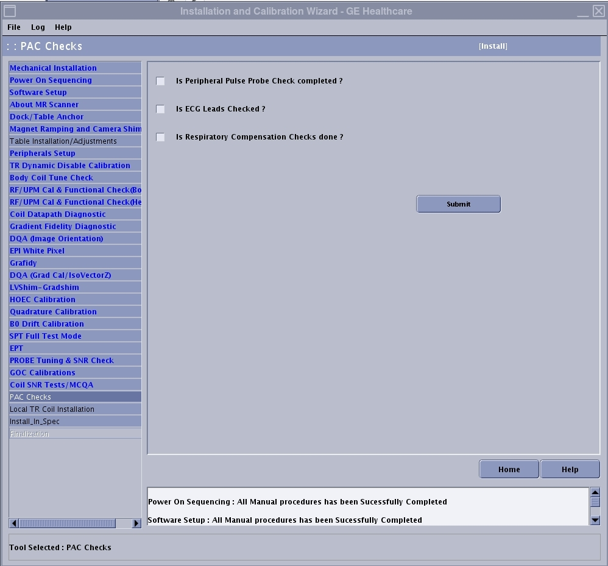

Checking off ICW PAC items
PAC Checks is one of the final steps in the installation portion of the Installation and Calibration Wizard (ICW), though it can be done at any time during the installation.
Prerequisites
- Peripheral pulse probe check
- ECG leads checks
- Respiratory compensation checks
Procedure
- Insert the service key.
- Launch the service browser (Common Service Desktop).
- Click the Calibration tab.
- If in install or upgrade mode, select Install and Calibration Wizard and Click here to start this tool.
The PAC Checks screen is displayed. PAC Checks is one of the final steps in the ICW.Figure 1. PAC checks

- Checking the peripheral pulse probe. When completed, check the box next to "Is Peripheral Pulse Probe Check completed?"
- Checking the ECG leads ordered by the customer. When completed, check the box next to "Is ECG Leads checked?"
- Checking the respiratory gating signal. When completed, check the box next to "Is Respiratory Checks Done?"
- Click Submit.